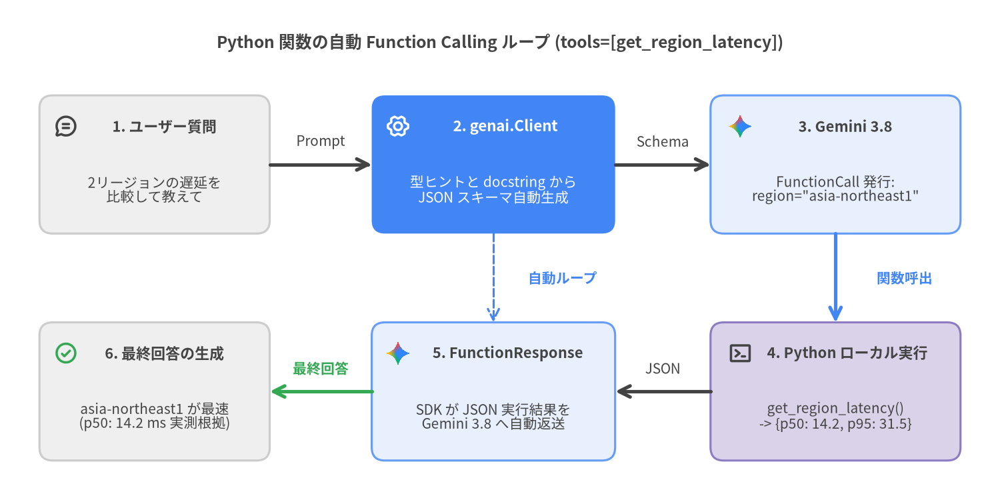
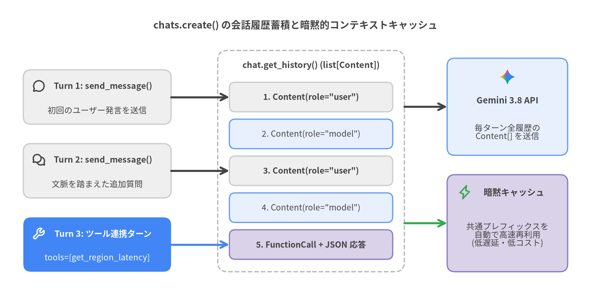

05. マルチターン Chat と Function Calling（ツール連携）
google-genai SDK は、ステートレスなモデル呼び出しを「状態とツールを備えた実用的なアシスタント」へと進化させる2つの標準プリミティブを提供しています。会話履歴を自動管理する client.chats.create() と、Python の型ヒントおよび docstring からスキーマを自動抽出し、ローカル関数の実行から結果の再投入までを自動化する 自動 Function Calling（tools=[fn]） です。

View Drawlib Python Code
from drawlib.canvas import save, setup
from drawlib.icons import ai, phosphor
from drawlib.lines import line
from drawlib.shapes import rectangle
from drawlib.styles import Styles
from drawlib.text import text
setup(width=152, height=76, dpi=150)
# Title
text(
(76.0, 69.5),
"Python 関数の自動 Function Calling ループ (tools=[get_region_latency])",
style=Styles.DarkBold.patch(text_size=11.8),
)
# --- Top Row (y_center = 51.0, height = 21.0 -> [40.5, 61.5]) ---
# 1. User Prompt (Neutral)
rectangle((23.5, 51.0), width=35.0, height=21.0, style=Styles.Neutral.patch(shape_r=2.0))
phosphor.chat_circle_text((10.0, 56.8), width=3.8, style=Styles.DarkBold)
text((25.0, 56.8), "1. ユーザー質問", style=Styles.DarkBold.patch(text_size=10.5))
text(
(23.5, 47.2),
"2リージョンの遅延を\n比較して教えて",
style=Styles.Dark.patch(text_size=10.0),
)
# 2. genai.Client (Focal PrimaryFlat)
rectangle((75.0, 51.0), width=37.0, height=21.0, style=Styles.PrimaryFlat.patch(shape_r=2.0))
phosphor.gear_six((60.5, 56.8), width=3.8, style=Styles.WhiteBold)
text((76.8, 56.8), "2. genai.Client", style=Styles.WhiteBold.patch(text_size=10.8))
text(
(75.0, 47.2),
"型ヒントと docstring から\nJSON スキーマ自動生成",
style=Styles.White.patch(text_size=10.0),
)
# 3. Gemini FunctionCall (PrimaryNeutral)
rectangle((127.0, 51.0), width=38.0, height=21.0, style=Styles.PrimaryNeutral.patch(shape_r=2.0))
ai.gemini((112.5, 56.8), width=3.8, style=Styles.Primary)
text((128.5, 56.8), "3. Gemini 3.8", style=Styles.DarkBold.patch(text_size=10.5))
text(
(127.0, 47.2),
'FunctionCall 発行:\nregion="asia-northeast1"',
style=Styles.Dark.patch(text_size=10.0),
)
# --- Bottom Row (y_center = 16.5, height = 21.0 -> [6.0, 27.0]) ---
# 4. Local Python Tool Execution (SecondaryNeutral)
rectangle((127.0, 16.5), width=38.0, height=21.0, style=Styles.SecondaryNeutral.patch(shape_r=2.0))
phosphor.terminal_window((112.5, 22.3), width=3.8, style=Styles.DarkBold)
text((128.8, 22.3), "4. Python ローカル実行", style=Styles.DarkBold.patch(text_size=10.5))
text(
(127.0, 12.7),
"get_region_latency()\n-> {p50: 14.2, p95: 31.5}",
style=Styles.Dark.patch(text_size=10.0),
)
# 5. FunctionResponse JSON -> Gemini (PrimaryNeutral)
rectangle((75.0, 16.5), width=37.0, height=21.0, style=Styles.PrimaryNeutral.patch(shape_r=2.0))
ai.gemini((60.5, 22.3), width=3.8, style=Styles.Primary)
text((77.2, 22.3), "5. FunctionResponse", style=Styles.DarkBold.patch(text_size=10.5))
text(
(75.0, 12.7),
"SDK が JSON 実行結果を\nGemini 3.8 へ自動返送",
style=Styles.Dark.patch(text_size=10.0),
)
# 6. Final Grounded Answer (Neutral)
rectangle((23.5, 16.5), width=35.0, height=21.0, style=Styles.Neutral.patch(shape_r=2.0))
phosphor.check_circle((10.0, 22.3), width=3.8, style=Styles.SuccessBold)
text((25.0, 22.3), "6. 最終回答の生成", style=Styles.DarkBold.patch(text_size=10.5))
text(
(23.5, 12.7),
"asia-northeast1 が最速\n(p50: 14.2 ms 実測根拠)",
style=Styles.Dark.patch(text_size=10.0),
)
# --- Connectors ---
line((41.0, 51.0), (56.5, 51.0), arrow_head="->", style=Styles.DarkBold)
text((48.75, 54.5), "Prompt", style=Styles.Dark.patch(text_size=10.0))
line((93.5, 51.0), (108.0, 51.0), arrow_head="->", style=Styles.DarkBold)
text((100.75, 54.5), "Schema", style=Styles.Dark.patch(text_size=10.0))
line((127.0, 40.5), (127.0, 27.0), arrow_head="->", style=Styles.PrimaryBold)
text((137.5, 33.75), "関数呼出", style=Styles.PrimaryBold.patch(text_size=10.0))
line((108.0, 16.5), (93.5, 16.5), arrow_head="->", style=Styles.DarkBold)
text((100.75, 20.0), "JSON", style=Styles.Dark.patch(text_size=10.0))
line((56.5, 16.5), (41.0, 16.5), arrow_head="->", style=Styles.SuccessBold)
text((48.75, 20.0), "最終回答", style=Styles.SuccessBold.patch(text_size=10.0))
# SDK orchestration link across top and bottom stages
line((75.0, 40.5), (75.0, 27.0), arrow_head="->", style=Styles.PrimaryDashed)
text((85.5, 33.75), "自動ループ", style=Styles.PrimaryBold.patch(text_size=10.0))
save()
1. クライアント初期化とマルチターン会話（client.chats.create）
セルの先頭で MODEL = "gemini-3.8-flash" を定義し、Google Colab のシークレット（userdata.get）から GEMINI_API_KEY を読み込んで共通の genai.Client を初期化します。
!pip install -q google-genai
MODEL = "gemini-3.8-flash"
from google.colab import userdata
from google import genai
client = genai.Client(api_key=userdata.get("GEMINI_API_KEY"))
単発の client.models.generate_content() とは異なり、client.chats.create() はセッション内部で list[types.Content] 形式の会話履歴を保持します。chat.send_message() を呼ぶたびに Content(role="user") とモデルの応答 Content(role="model")（および途中のツール呼び出し履歴）が自動的に追記されます。さらにマルチターン会話が長くなると、毎ターン送信される共通プレフィックスに対して Gemini 3.8 の 暗黙的コンテキストキャッシュ（Implicit Context Caching） が追加設定なしで自動的に働き、レイテンシ（TTFT）と入力トークンコストが抑えられます。

View Drawlib Python Code
from drawlib.canvas import save, setup
from drawlib.icons import ai, phosphor
from drawlib.lines import line
from drawlib.shapes import rectangle
from drawlib.styles import Styles
from drawlib.text import text
setup(width=152, height=76, dpi=150)
# Title
text(
(76.0, 69.5),
"chats.create() の会話履歴蓄積と暗黙的コンテキストキャッシュ",
style=Styles.DarkBold.patch(text_size=11.8),
)
# --- Left Column: Sequential Notebook Calls (x in [6, 44], cx = 25.0) ---
rectangle((25.0, 51.0), width=38.0, height=14.0, style=Styles.Neutral.patch(shape_r=2.0))
phosphor.chat_circle((10.0, 53.8), width=3.5, style=Styles.DarkBold)
text((26.5, 53.8), "Turn 1: send_message()", style=Styles.DarkBold.patch(text_size=10.2))
text((25.0, 47.6), "初回のユーザー発言を送信", style=Styles.Dark.patch(text_size=10.0))
rectangle((25.0, 32.0), width=38.0, height=14.0, style=Styles.Neutral.patch(shape_r=2.0))
phosphor.chats_circle((10.0, 34.8), width=3.5, style=Styles.DarkBold)
text((26.5, 34.8), "Turn 2: send_message()", style=Styles.DarkBold.patch(text_size=10.2))
text((25.0, 28.6), "文脈を踏まえた追加質問", style=Styles.Dark.patch(text_size=10.0))
rectangle((25.0, 13.0), width=38.0, height=14.0, style=Styles.PrimaryFlat.patch(shape_r=2.0))
phosphor.wrench((10.0, 15.8), width=3.5, style=Styles.WhiteBold)
text((26.5, 15.8), "Turn 3: ツール連携ターン", style=Styles.WhiteBold.patch(text_size=10.2))
text((25.0, 9.6), "tools=[get_region_latency]", style=Styles.White.patch(text_size=10.0))
# --- Center Container: Session History Stack (x in [56, 104], cx = 80.0) ---
rectangle((80.0, 34.5), width=48.0, height=57.0, style=Styles.MutedDashed.patch(shape_r=2.5))
text((80.0, 59.2), "chat.get_history() (list[Content])", style=Styles.DarkBold.patch(text_size=10.4))
rectangle((80.0, 51.0), width=42.0, height=7.6, style=Styles.Neutral.patch(shape_r=1.5))
text((80.0, 51.0), '1. Content(role="user")', style=Styles.DarkBold.patch(text_size=10.0))
rectangle((80.0, 41.5), width=42.0, height=7.6, style=Styles.PrimaryNeutral.patch(shape_r=1.5))
text((80.0, 41.5), '2. Content(role="model")', style=Styles.Dark.patch(text_size=10.0))
rectangle((80.0, 32.0), width=42.0, height=7.6, style=Styles.Neutral.patch(shape_r=1.5))
text((80.0, 32.0), '3. Content(role="user")', style=Styles.DarkBold.patch(text_size=10.0))
rectangle((80.0, 22.5), width=42.0, height=7.6, style=Styles.PrimaryNeutral.patch(shape_r=1.5))
text((80.0, 22.5), '4. Content(role="model")', style=Styles.Dark.patch(text_size=10.0))
rectangle((80.0, 13.0), width=42.0, height=7.6, style=Styles.SecondaryNeutral.patch(shape_r=1.5))
text((80.0, 13.0), "5. FunctionCall + JSON 応答", style=Styles.DarkBold.patch(text_size=10.0))
# --- Right Column: Gemini 3.8 & Implicit Caching (x in [115, 146], cx = 130.5) ---
rectangle((130.5, 48.5), width=31.0, height=25.0, style=Styles.PrimaryNeutral.patch(shape_r=2.0))
ai.gemini((130.5, 56.2), width=4.2, style=Styles.Primary)
text((130.5, 50.2), "Gemini 3.8 API", style=Styles.DarkBold.patch(text_size=10.5))
text(
(130.5, 42.0),
"毎ターン全履歴の\nContent[] を送信",
style=Styles.Dark.patch(text_size=10.0),
)
rectangle((130.5, 18.5), width=31.0, height=25.0, style=Styles.SecondaryNeutral.patch(shape_r=2.0))
phosphor.lightning((119.5, 26.5), width=3.8, style=Styles.SuccessBold)
text((132.2, 26.5), "暗黙キャッシュ", style=Styles.DarkBold.patch(text_size=10.5))
text(
(130.5, 15.5),
"共通プレフィックスを\n自動で高速再利用\n(低遅延・低コスト)",
style=Styles.Dark.patch(text_size=10.0),
)
# --- Orthogonal Connectors ---
line((44.0, 51.0), (59.0, 51.0), arrow_head="->", style=Styles.DarkBold)
line((44.0, 32.0), (59.0, 32.0), arrow_head="->", style=Styles.DarkBold)
line((44.0, 13.0), (59.0, 13.0), arrow_head="->", style=Styles.PrimaryBold)
line((104.0, 48.5), (115.0, 48.5), arrow_head="->", style=Styles.DarkBold)
line((104.0, 18.5), (115.0, 18.5), arrow_head="->", style=Styles.SuccessBold)
save()
MODEL（gemini-3.8-flash）でチャットセッションを作成し、短い2ターンのメッセージを送信したあと、chat.get_history() に蓄積された user と model のターンを確認してみましょう。
chat = client.chats.create(model=MODEL)
reply_1 = chat.send_message("私の好きなプログラミング言語はPythonです。")
print("Turn 1:", reply_1.text)
reply_2 = chat.send_message("私の好きな言語は何ですか？1文で答えてください。")
print("Turn 2:", reply_2.text)
print("\n--- 蓄積されたセッション履歴 ---")
for idx, turn in enumerate(chat.get_history(), start=1):
preview = " ".join(
p.text.strip() for p in (turn.parts or []) if p.text and not p.thought
)
print(f"[{idx}] role={turn.role:<5} | {preview[:80]}")
2. Python 関数の自動 Function Calling とツール付きチャット
外部の監視メトリクスや社内 API を Gemini に連携させるには、型ヒント（region: str -> dict[str, float]）と Google スタイルの docstring（Args: / Returns:）を記述した通常の Python 関数を types.GenerateContentConfig(tools=[...]) にそのまま渡します。SDK が関数シグネチャから JSON スキーマを自動生成します。
まずは単発の client.models.generate_content(model=MODEL, ...) で2つのリージョンのレイテンシを比較してみましょう。genai.Client が各リージョンに対してローカルの get_region_latency() を自動実行し、FunctionResponse をモデルへ返送して実測値に基づく比較結果を出力します。
from google.genai import types
REGION_LATENCY_MS: dict[str, dict[str, float]] = {
"asia-northeast1": {"p50_ms": 14.2, "p95_ms": 31.5},
"us-central1": {"p50_ms": 24.5, "p95_ms": 58.4},
"europe-west1": {"p50_ms": 38.6, "p95_ms": 84.2},
}
def get_region_latency(region: str) -> dict[str, float]:
"""指定されたクラウドリージョンの最新 API レイテンシ（p50 / p95 ミリ秒）を取得します。
Args:
region: 対象リージョン ID（'asia-northeast1', 'us-central1', 'europe-west1'）。
Returns:
'p50_ms'（中央値）と 'p95_ms'（95パーセンタイル）を含む辞書。
"""
return REGION_LATENCY_MS.get(region, {"p50_ms": -1.0, "p95_ms": -1.0})
response = client.models.generate_content(
model=MODEL,
contents="asia-northeast1 と us-central1 のレイテンシを比較してください。",
config=types.GenerateContentConfig(
tools=[get_region_latency],
temperature=0.1,
),
)
print(response.text)
続いて、これまでの2つの機能を組み合わせて client.chats.create(model=MODEL, config=...) に tools=[get_region_latency] を渡します。フォローアップ質問を重ねても過去の文脈を維持したまま必要に応じて追加のツール呼び出しを実行し、すべての FunctionCall と FunctionResponse が tool_chat.get_history() に記録されます。
tool_chat = client.chats.create(
model=MODEL,
config=types.GenerateContentConfig(
tools=[get_region_latency],
temperature=0.1,
),
)
turn_1 = tool_chat.send_message("asia-northeast1 と us-central1 のレイテンシを確認してください。")
print("Turn 1:\n", turn_1.text)
turn_2 = tool_chat.send_message("europe-west1 も確認して、最速のリージョンを1文で答えてください。")
print("\nTurn 2:\n", turn_2.text)
print("\n--- 記録されたツール呼び出しトレース ---")
for turn in tool_chat.get_history():
for part in turn.parts or []:
if part.function_call:
fc = part.function_call
print(f"-> FunctionCall: {fc.name}({dict(fc.args or {})})")
elif part.function_response:
print(f"<- FunctionResponse: {part.function_response.response}")
まとめ: ノートブック先頭で
MODEL = "gemini-3.8-flash"を定義し、マルチターン履歴を自動管理するclient.chats.create(model=MODEL)と、型付き Python 関数をtools=[fn]に渡すだけの自動 Function Calling を組み合わせることで、単発のgenerate_content()から複数ターンのツール付きチャットまでボイラープレートなしで実装できます。